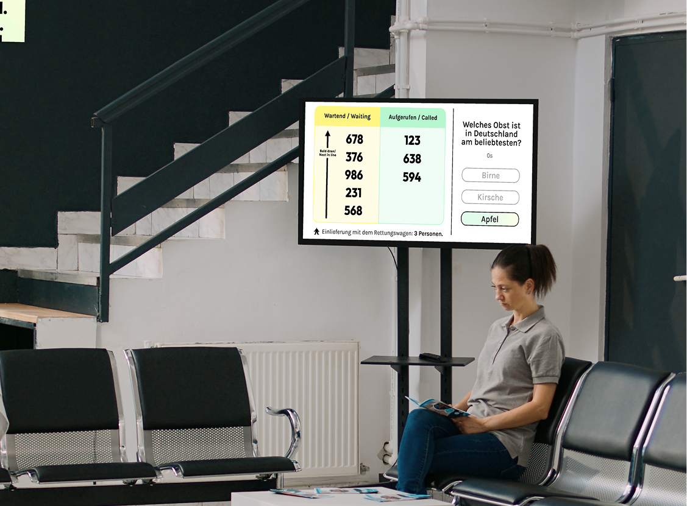

this project, enhances the emergency room experience by improving communication, reducing patient stress, and ensuring transparency throughout the waiting process. Drawing inspiration from the need for calm, reassuring communication, the websystem
incorporates user-friendly interfaces, real-time status updates, and intuitive digital touchpoints. Interactive elements guide patients through the process, balancing clarity and create a sense of safety, trust, and efficiency during stressful
times.
Emergency waiting rooms are often associated with long wait times, uncertainty, and stress. The challenge was to design a system that keeps patients informed, engaged, and reassured while maintaining an efficient communication flow between
medical staff and those waiting.
“ I just sat there, completely in the dark, not knowing what was going on.“
my role & impact
research
my team conducted user interviews and analyzed hospital workflows to identify key pain points in the patient experience.
design
The system integrates status updates, interactive distractions, and ambient design elements to create a more structured experience for patients.
Development
we developed an intuitive real-time patient status system that provides live updates on waiting times and the next steps in the treatment process. By integrating seamless digital touchpoints, the system enhances communication between medical
staff and patients, reducing uncertainty, improving workflow efficiency, and ultimately creating a calmer, more structured waiting experience.

research
user interviews
To gain a deep understanding of the challenges in emergency waiting rooms, we conducted interviews with patients, medical staff, and doctors. Their firsthand experiences highlighted key pain points such as uncertainty, stress, and the
overwhelming lack of clear communication
hospital reviews
By analyzing hospital reviews from a broad range of sources, we were able to capture diverse patient perspectives and identify recurring issues.
existing systems
we examined existing emergency waiting systems to understand how other healthcare facilities manage patient communication. This helped identify innovative approaches that could be adapted to create a more transparent system.
services
In-depth Information
Patients access estimated wait times and treatment details via a web application by logging in with their ID and birthdate.
Transparent Waiting Time
Screens display the number of waiting patients and include interactive quizzes to improve the wait experience.
Status Updates
Patients can SMS their treatment status to a contact, ensuring family members are informed and less worried about wait times and procedures.
Call by Staff
Patients are (besides the waiting list screen) personally called by staff at the end of their wait to guide them to their treatment rooms.
testing
To validate our concept, we conducted on-site user testing in the emergency department, observing real patient interactions and gathering feedback on the system’s usability. This allowed us to refine features, ensuring clear communication
and reducing stress during waiting times.
“Seeing the real-time updates made the wait much less frustrating. also it was great to share my status with my family so they knew what was going on.“
design
look and feel
Accessibility
Focusing on accessibility in this project was crucial to ensure that everyone, regardless of ability, could use the emergency waiting system effectively. This inclusivity is vital in healthcare, where patients may face diverse challenges
related to mobility, vision, hearing, or cognition. By prioritizing accessible design, we enhance patient comfort, meet legal standards, and improve overall care quality.
typography
Ensures all text is above 11 pt and left-aligned for better readability.
Touch Targets
Buttons are designed to be easily clickable, meeting AA accessibility standards.
Visual Aids
Button outlines are enhanced for users with visual impairments, aiding in easy navigation.
colors
Uses soft pastel greens to signify peace and healing, with light pastels that soothe and reduce sensory overload.
animations
the gentle aura animations and charming figures create a calming, engaging experience. The aura's soothing movements reduce stress, while the playful figures guide users through the system with helpful cues. Together, they enhance comfort
and clarity, making the wait more bearable.
design system
styleguide
Defines visual guidelines for a consistent design.
styleguide
atoms
The smallest building blocks of the system.
Example: Buttons, Input Fields
components
Reusable UI elements.
Example: Header/Footer, Cards
key learnings
Balancing efficient information delivery with patient-centered design is essential for improving the waiting experience. By combining clear communication, engaging distractions, and a structured workflow, this concept makes emergency room visits
feel more predictable, less stressful, and ultimately more human-centered.